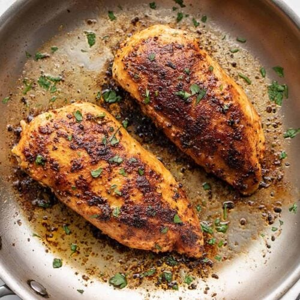

Pan-Seared Chicken

Pan-Seared Chicken
This recipe is very simple (as all my recipes are) yet tasty. I don't think you can even call these recipes. Anyways. This is pan-seared chicken.
Ingredients
- Chicken
- Spice mixture (salt, pepper, garlic powder, cayenne)
Steps
- Coat chicken in spice mixture. Add cayenne relative to your spice level
- Put stove on medium heat for ~1.5-2 minutes. Temperature of oil should be around 250-300 degrees if you can measure it.
- Fry in oil for about 4 minutes on each side. Don't touch the chicken while it's cooking to ensure a nice sear